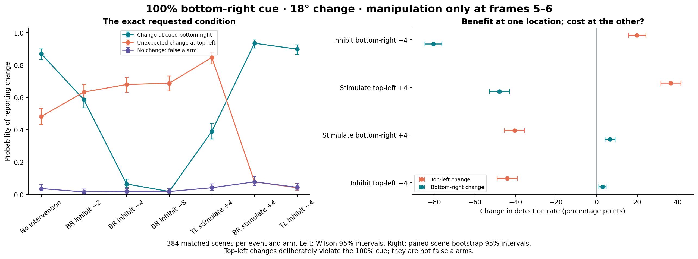
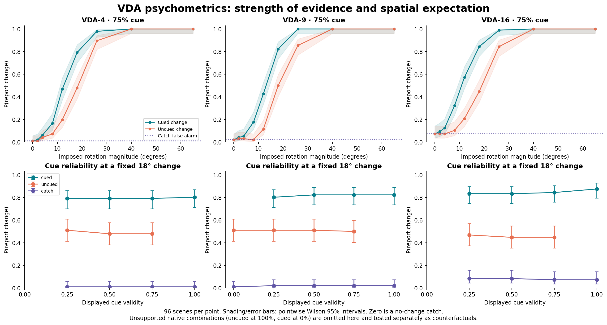
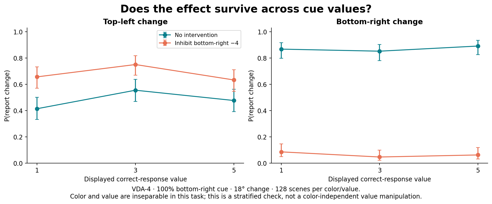
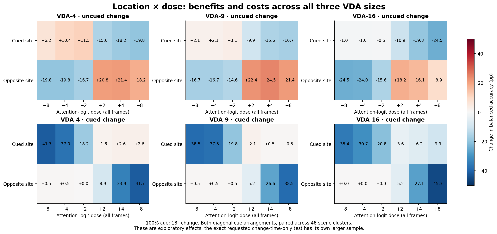
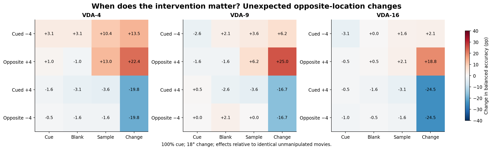
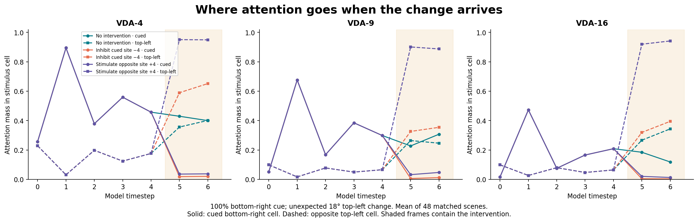
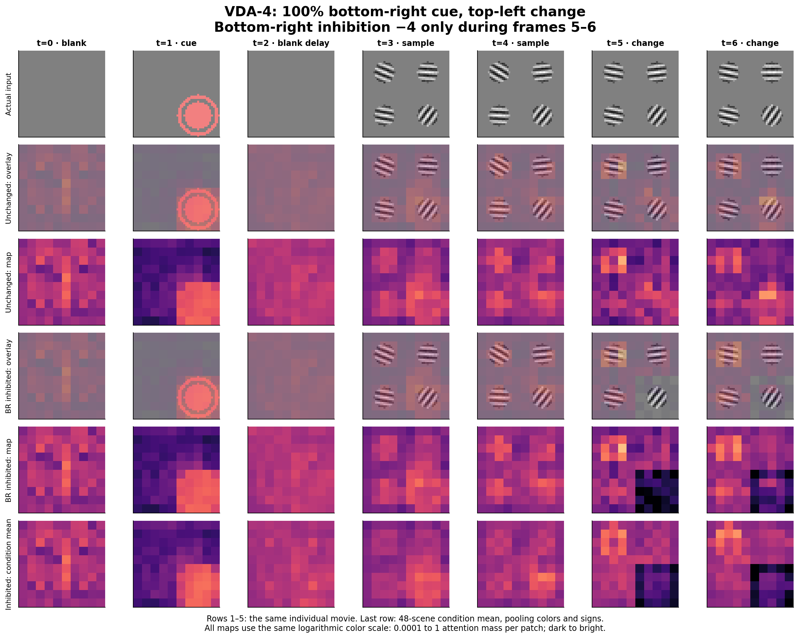
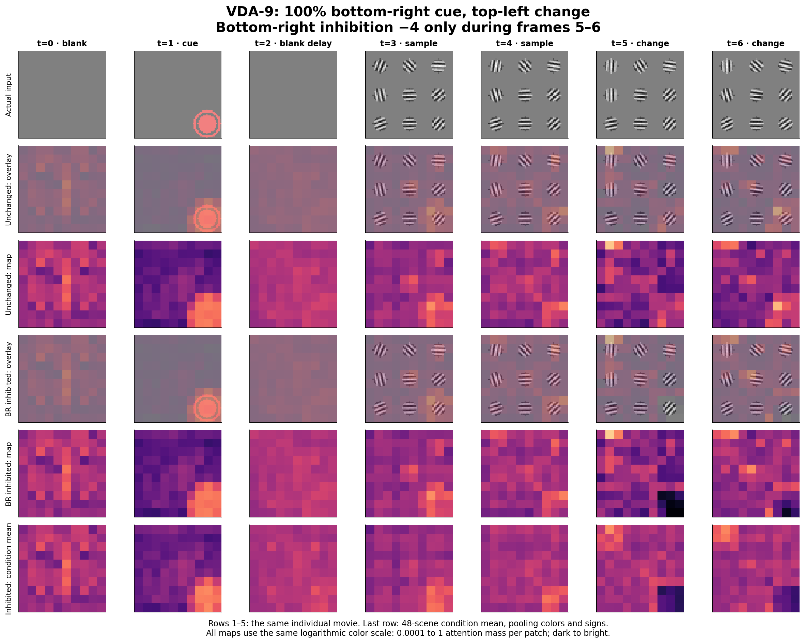
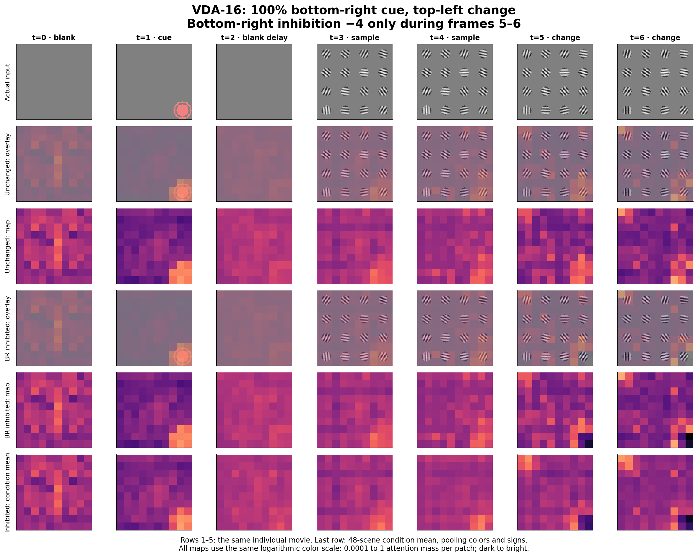

Frozen checkpoint 16,000 · VDA4 / VDA9 / VDA16
Suppressing the cued location reveals an unexpected change
Top-left detection rose from 48.2% to 68.0% when bottom-right attention was inhibited during the change. Bottom-right detection fell from 87.0% to 6.5%.
131,616 frozen inference presentations384 scenes in the primary test90 attention groups · all 7 timestepsNo retraining
Exact hypothesis · Psychometrics · Dose and timing · Explore attention · Methods and downloads
The exact test you proposed
VDA-4. A 100% cue at bottom-right, followed by an 18° change at top-left. Bottom-right priority logits are reduced only during frames 5 and 6. Matched movies also place the change at bottom-right, or contain no change.
The predicted reciprocal effect is present in this model. Bottom-right inhibition −4 improved top-left detection by 19.8 percentage points (paired 95% interval 15.6 to 24.2). False alarms changed from 3.6% to 1.8%. For top-left changes plus catches, balanced accuracy rose from 72.3% to 83.1%; d′ rose from 1.73 to 2.53.

The same 384 scenes are repeated across interventions. Benefit/cost tests use exact paired binary tests, Holm-corrected across 8 planned directional comparisons. Click for PDF.
| Intervention (frames 5–6) | Top-left detection | Bottom-right detection | False alarms |
|---|
| No intervention | 48.2% | 87.0% | 3.6% |
| Inhibit bottom-right −2 | 63.3% | 58.6% | 1.6% |
| Inhibit bottom-right −4 | 68.0% | 6.5% | 1.8% |
| Inhibit bottom-right −8 | 68.8% | 1.8% | 1.8% |
| Stimulate top-left +4 | 84.6% | 39.1% | 4.2% |
| Stimulate bottom-right +4 | 7.8% | 93.5% | 7.8% |
| Inhibit top-left −4 | 4.2% | 89.8% | 4.4% |
This is a deliberate violation of a perfectly reliable cue. An uncued change never follows a 100% cue in native training. In VDA, however, any physical change is reportable: top-left detections are correct responses, not false alarms. The result measures how an intervention changes selection when spatial expectation is violated; it does not by itself reproduce a biological inactivation experiment.
Evidence strength and cue reliability

Observed rates with pointwise 95% intervals; no fitted sigmoid. Uncued controlled curves use the diagonally opposite location. Click for PDF.
There is a clear cued-location advantage, but changing the displayed validity produces only modest behavioral changes at 18°. The intervention result establishes spatial competition; it does not establish that the model has learned a calibrated interpretation of the ring probabilities.

The main VDA-4 effect split by the three color/value cues. Click for PDF.
Fresh native-task checks: 512 trials per condition
| Task | Training-style θ maximum | Fresh BA | AUC | Trials |
|---|
| VDA-4 | 8° | 53.2% | 0.526 | 512 |
| VDA-4 | 26° | 70.0% | 0.775 | 512 |
| VDA-4 | 65° | 86.5% | 0.898 | 512 |
| VDA-9 | 8° | 51.0% | 0.563 | 512 |
| VDA-9 | 26° | 68.0% | 0.744 | 512 |
| VDA-9 | 65° | 83.2% | 0.884 | 512 |
| VDA-16 | 8° | 50.6% | 0.548 | 512 |
| VDA-16 | 26° | 73.4% | 0.795 | 512 |
| VDA-16 | 65° | 84.2% | 0.882 | 512 |
Location, dose and timing

35 exploratory arms per VDA size include site, dose, timing, both-site, blank-area and global-shift controls. Click for PDF.

Cue, blank delay, sample and change interventions are distinct. Main sweeps also include 75% validity and 40° changes; see the complete effect table. Click for PDF.
The same change-time inhibition across display sizes
100% cue, 18° change, cued-site inhibition −4 only during frames 5–6. These exploratory checks use a separate set of 48 scenes, each tested in both diagonal cue arrangements. They are additional stimulus tests of this checkpoint, not independently trained models.
| Task | Opposite-change detection | Cued-change detection | Opposite/catch BA gain (95% interval) |
|---|
| VDA-4 | 43.8% → 68.8% | 87.5% → 7.3% | +13.5 pp (+9.4 to +17.7) |
| VDA-9 | 33.3% → 45.8% | 77.1% → 2.1% | +6.2 pp (+3.6 to +9.4) |
| VDA-16 | 52.1% → 54.2% | 93.8% → 28.1% | +2.1 pp (+0.0 to +5.2) |

The attention distribution is recorded at every model timestep, using the actual single CLS-query weights. Click for PDF.
Explore every attention frame
Actual model input
Attention overlay
Its projected attention
Condition mean attention
0.00010.0010.010.11
Fixed logarithmic color scale: attention mass per patch. Nearest-neighbor projection preserves the actual 10×10 grid. Saturated low values are ≤0.0001; maps sum to 1 before projection.
Animated comparisons: VDA-4 GIF · VDA-9 GIF · VDA-16 GIF. Playback is slowed for inspection.

VDA-4: one movie shown with and without bottom-right inhibition, plus the independently labeled condition mean. Click for PDF.
VDA-9 and VDA-16 every-timestep contact sheets

VDA-9 matched intervention timeline. Click for PDF.
VDA-16 matched intervention timeline. Click for PDF.Methods and limits
One validation-selected checkpoint, with every parameter frozen and no optimizer. Native rendering, per-frame 5° orientation jitter and pixel noise are retained. Controlled analysis fixes cue, validity, sign and change location after consuming native trial draws. Native-equivalence, zero-bias and global-softmax-shift controls are checked. Identical stimulus arrays are reused across interventions.
Inhibition/stimulation means an additive bias before the spatial softmax, applied to every token whose center lies in the selected stimulus cell. A −4 dose multiplies that cell's unnormalized attention weights by exp(−4), about 1/55, before attention is redistributed across the image. The first manipulated frame is checked against this exact formula. Later frames can also reflect changed recurrent memory. This is not literal neural silencing. Cell footprints differ across VDA sizes, so equal doses are not equal biological currents or a pure set-size manipulation.
The model has one CLS query over 100 image patches. Averaging incoming attention over its one query gives the actual attention row; there is no 100×100 patch-query matrix to average. The atlas includes individual stimuli/maps and separately labeled condition means across 48 scenes, pooling the three colors and both rotation signs. Mean images blur varying Gabor orientations.
Primary tests: 384 independent scenes, all three event types paired within scene, 8 planned one-sided exact binary comparisons with Holm correction. Paired bootstrap intervals resample whole scenes. Exploratory sweeps reuse 48 scenes in mirrored geometries and cluster both mirrors together; intervals are pointwise. These results establish a computational intervention effect in one trained model, not replication across training seeds or biological causation.
Written report · Prospective protocol · Primary effects · Corrected hypothesis tests · All intervention effects · All psychometric points · Native value/validity strata · Audit receipt